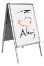
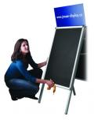
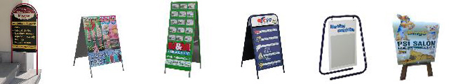
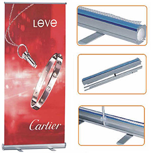

Reklamní poutače
Áčka
Jsou to pouliční reklamní stojany (áčka), vyrobené z eloxovaného hliníku, s možností výměny prospektů pomocí zaklapávacích lišt s krycí UV fólií.
Patří mezi nejjednodušší, ale zároveň také nejefektivnější prezentační systémy. Poutače jsou určeny pro venkovní i interiérové použití. Poutač můžete umístit třeba na chodník a oslovit tak mnoho kolemjdoucích.
Tímto způsobem můžete zvýšit návštěvnost obchodu, restaurace či ubytovacího zařízení.
 {kind=link}
{kind=link}
Výhody, které nabízí:
- lehká a stabilní konstrukce
- snadná výměna plakátů
- dlouhá životnost i při umístění v exteriéru
- atraktivní vzhled
- přijatelná cena
Atypické reklamní poutače
Na zakázku vytvoříme zcela nový tvarovaný poutač dle Vašeho přání.
{kind=link}
Rollup
Reklamní stojan - rollup je moderní prezentační systém. Tato lehká roleta je rychle a snadno použitelná s konstantní podpěrnou tyčí výšky 200 cm. Součástí rollupu je nylonová taška, pro snadný a rychný přenos. Rollup je velmi oblíbený hliníkový banner s jednoduchým elegantním designem, který vyniká svojí lehkostí, mobilitou a výbornou stabilitou zajištěnou širokými nohami základny. Hlavní funkce a především výhoda je v uložení motivu, který se do systému roluje, čímž je chráněn proti poškození. Další výhodou je snadná výměna motivů, diky systému uchycení pomocí horní zaklapávací lišty. Instalace roll-up banneru je rychlá a jednoduchá. Po vyjmutí systému z ochranného obalu, který je součáští dodávky se motiv vysune ze základny a podepře skládací tyčí.
{kind=link}